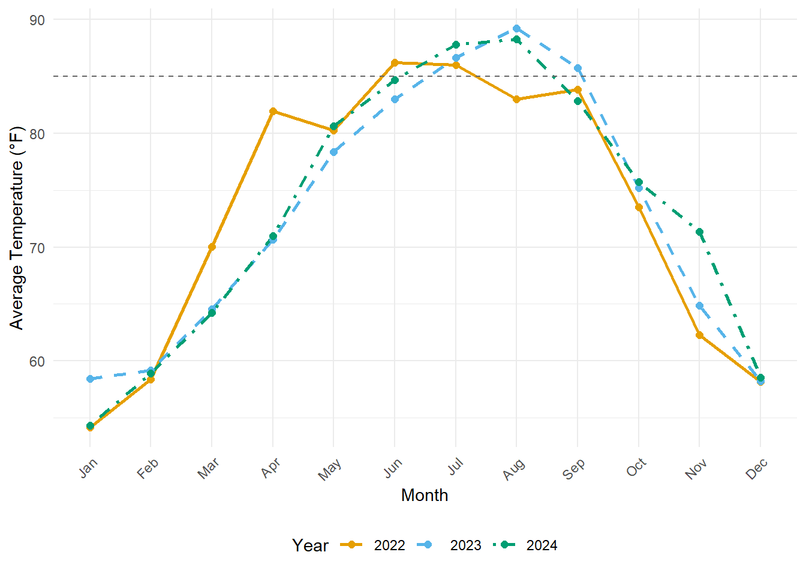

2 Report
2.1 Introduction
Over the past few decades, the demand for reliable electricity has increased steadily, and that trend shows no signs of slowing down. At the same time, global temperatures are rising, which puts extra pressure on power plants—especially those that use water to cool their equipment. Without effective cooling, turbines can overheat, efficiency drops, and unplanned shutdowns become more likely (bergmann 2024). These issues can lead to higher operating costs and potential power shortages during peak demand.
This report examines a mid‐sized power plant on Dauphin Island, Alabama, where water from the Gulf of Mexico is drawn. When the plant was built, designers assumed intake water would stay below 85 °F year‐round. Recent data show that sea‐surface temperatures there occasionally exceed 85 °F—the level engineers originally considered the safe upper limit for cooling intake water. When temperatures climb above this threshold, the plant must scale back capacity to avoid overheating, which can reduce revenue and compromise grid reliability. This analysis aims to assess the operational risk of the plant having to lower production during high ocean temperature periods.
2.2 Methods
2.2.1 Data Sources
Two main datasets were used in this analysis. The first dataset consisted of hourly water temperature readings collected from a buoy located near Dauphin Island, Alabama. These temperature data covered the period from January 2022 through December 2024 and were provided by the National Data Buoy Center (“NDBC - Historical Meteorological Data Search - Station DPHA1,” n.d.). The second dataset was an electricity usage forecast for the year 2024, specifically for the Southeastern U.S. (SERC-SE region), focusing on the “Net Energy For Load,” provided by the North American Electric Reliability Corporation (“Electricity Supply & Demand (ES&d),” n.d.) .
2.2.2 Temperature Data Preparation
Three separate datasets for temperature, each corresponding to one year (2022, 2023, 2024), were combined into a single dataset. After combining, the dataset was cleaned to retain only relevant information, such as year, month, day, and temperature measurements. Incorrect readings, including placeholder values (temperatures equal to or above 999) and unusually high readings from April 2022 (temperatures above 28.5 °C), were removed.
After cleaning, temperature values were converted from Celsius to Fahrenheit, matching the plant’s operational standards. A new date column was also created using a standardized “year-month-day” format for ease of analysis.
Monthly average temperatures were then calculated by grouping daily temperature data. Each month was labeled as either “Above 85 °F” or “Below 85 °F” based on whether the average exceeded the critical threshold of 85 °F. Finally, a long-term average was computed by averaging monthly values across the entire three-year span.
A linear regression model was then created using monthly average temperatures to predict future temperatures, extending the dataset five years beyond the observed period.
2.2.3 Electricity Usage Data Preparation
Electricity forecast data for 2024 was processed separately. The data was initially loaded from a spreadsheet and filtered to include only entries for the SERC-SE region and the “Reporting Year Forecast – Net Energy For Load.”
The data initially contained monthly columns for each month from January to December. These monthly columns were reshaped into a long-form dataset, creating individual rows for each month. Energy consumption values were converted to numeric format, and months were organized chronologically from January through December for clearer analysis.
2.2.4 Combined Data Visualization
To visualize the relationship between water temperatures and electricity usage effectively, the data required scaling. A scaling factor was calculated by dividing the maximum forecasted energy value for 2024 by the highest average temperature recorded across the three years. This scaling enabled clear and accurate plotting of both temperature and energy data on a single graph.
2.3 Results
2.3.1 Temperature Analysis
Analysis of water temperature data from the Dauphin Island buoy (2022–2024) reveals clear seasonal patterns, with temperatures frequently surpassing the critical threshold of 85 °F during the peak summer months.
Figure 1: Average Monthly Sea-Surface Temperature (2022–2024)
This plot illustrates the monthly average sea-surface temperatures recorded at Dauphin Island, Alabama, from 2022 through 2024. Notably, temperatures exceeded the operational threshold of 85 °F primarily in the months of July and August across multiple years, highlighting potential periods when power plant capacity may need to be reduced.
2.3.2 Predicted Future Temperature Trends
To assess future risks, a linear model was utilized to predict temperature trends based on historical data. This model accounts for interactions between year and month.
Figure 2: Predicted Average Monthly Temperatures (2025–2029)
This projection uses historical temperature trends from 2022–2024 to predict monthly average temperatures for the next five years (2025–2029). The forecasts indicate continued summertime peaks exceeding 85 °F, suggesting potential operational challenges in future years.
2.3.3 Electricity Usage Forecast (2024)
The 2024 electricity usage forecast for the SERC-SE region indicates significant peaks in energy demand during the summer months, aligning with the observed temperature peaks.

Figure 3: Forecasted Net Energy For Load (2024)
This graph depicts the forecasted monthly electricity usage for the SERC-SE region in 2024. Energy demand is highest during summer months, reflecting increased cooling demands associated with higher temperatures.
2.3.4 Relationship Between Temperature and Electricity Usage
A combined analysis of historical temperature data (2022–2024 averages) and the 2024 electricity demand forecast reveals a correlation between elevated sea-surface temperatures and increased electricity usage.

Figure 4: Overlay of Temperature and Electricity Usage
This dual-axis graph overlays average monthly sea-surface temperatures from historical data with the forecasted electricity demand for 2024. It demonstrates that temperature peaks closely align with peaks in electricity demand, particularly during the summer months, emphasizing the operational implications of rising sea-surface temperatures.
2.4 Conclusion
The analysis indicates that rising sea-surface temperatures in the Gulf of Mexico regularly exceed the critical operational threshold of 85°F, particularly in July and August. This trend is expected to continue and potentially intensify over the next five years, increasing operational risks for the Dauphin Island power plant. The synchronization of temperature peaks with periods of high electricity demand creates additional operational challenges, potentially forcing the plant to reduce capacity during peak demand periods. Such scenarios may lead to compromised grid reliability, increased operational costs, and potential economic impacts.
However, there are some limitations to this analysis. The linear regression model assumes historical trends will continue without considering sudden climatic or environmental changes. Additionally, the electricity demand forecast used for comparison is limited to a single year (2024) and may not accurately reflect longer-term fluctuations or future growth.
Some short term solutions are necessary like obtaining electricity from other sources and urging residents to reduce electrical power consumption. Once some short term solutions are in order then the plant can undergo a long term solution to solve the problem of the increasing ocean temperature.